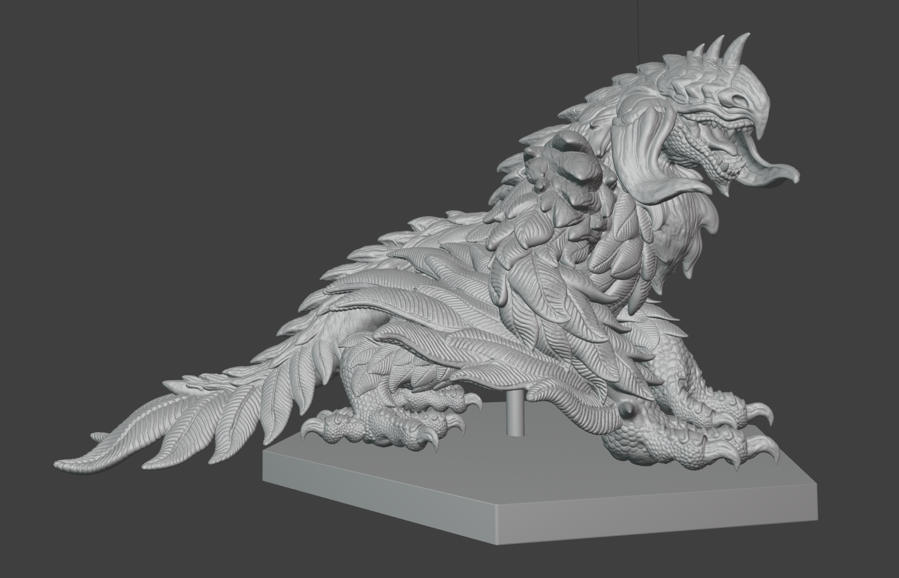

「 鳥竜の再デザイン / Redesign of Bird Wyvern 」
デザインコンセプト（再）
「猛禽×爬虫類」のハイブリッド、そして「盲目」という二つの軸から生まれたクリーチャーです。
デザインの核としたのは、欠落が生む強さ。視覚を失った代わりに手にしたであろう強靭な四肢と、地に根付くような力強いシルエットを追求しました。鳥類特有の流麗な羽毛の間に、爬虫類を彷彿とさせる鱗や節々のディテールを配し、異形としての説得力を持たせています。
また、視覚的なコントラストを強調するため、生命のエネルギーが溢れる胴体や翼に対し、頭部には「閉鎖性」を凝縮。負の側面を象徴するその特異な頭部デザインが、この個体の不気味さと神聖さを際立たせています。
前作からのリデザイン
今作では、前作で抱いていた「生物学的・デザイン的な不十分さ」を徹底的に見つめ直すことから始めました。
最大の変化は、尾部の再設計です。旧バージョンではボリューム不足ゆえに全体のシルエットが偏っていましたが、今作では飛行設定に基づき、十分な羽毛と質量を持たせたデザインへと刷新。これにより、飛行生物としての説得力と全身の造形バランスを両立させています。
そして、あえて主要な部位の形状は維持しつつも、ディテールと質感の密度を極限まで追求。さらに、将来的な立体出力と着色を見据えた正確なカラー設計を行い、生息環境や生態設定までをも再定義しました。「ただの造形物」ではなく、「自然界に実在し得る生命体」としての再構成を試みた意欲作です。
「 鳥竜の再造形 / Bird Wyvern Resculpture 」
再造形：工夫・改修
本作は、前作のスカルプトモデルをベースに、生物としてのリアリティを追求しリデザインした鳥竜の最新モデルです。
前述した最も大きな変更点である尻尾は、新たなコンセプトに基づき骨格から抜本的に再造形。全身のディテールもリデザインに合わせ、一節一節まで緻密な再調整を施しました。特にこだわったのは、長い年月を生き抜いた証である「甲殻のひび割れ」「古傷」「羽の筋」の表現です。
これらの掘りをあえて深く設計することで、デジタル上の視覚効果に留まらず、立体物として出力した際にその質感や「使い古された甲殻」の確かな手触りを感じられる、実体感のある造形を目指しました。また、リメッシュの解像度を極限まで高めることで、微細な皮膚の質感や生物的な脈動までもが、手に取るように伝わる仕上がりとなっています。

ホームへ戻る